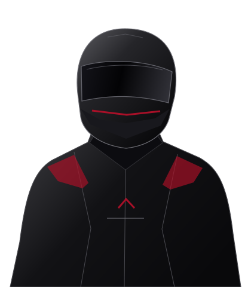

BUILD THE GRID.
Clean and connect relational race tables. Work toward one dependable row per driver, per race.
FORMULA 1 PODIUM PREDICTION
Before the lights go out.
Before the podium is decided.
We look for the signal in the race.
Who makes the podium?
Our ACL project explores Formula 1 through data engineering and machine learning. The brief: predict a top-three finish using only information available after qualifying and before the race begins.
Go inside the repository ↗Clean and connect relational race tables. Work toward one dependable row per driver, per race.
Explore qualifying, starting position, and historical form. Keep future race outcomes out of the features.
Evaluate across time and investigate what drives the model. Predictions should come with a reason.
This is the project brief and approach. The downloadable archive is the source for implementation details and results.
One team. A shared curiosity for what happens before the chequered flag.
Our faces stay off the grid.
Our work does the talking.

THE FOUNDATIONClean inputs. Connected tables. A solid starting grid.
Historical form. Pre-race features. The podium question.
Look under the visor. Understand the model's decisions.
Silhouettes represent project disciplines, rather than individual team members.
OFF THE GRID. INTO THE WORK.
The full project, one place.
Open the archive on Google Drive, preview it here, or get the ZIP from GitHub.
ACL · 9th Semester · Winter 26 (HBOX)
GOOGLE DRIVE PREVIEW
Hosted by GoogleIf Drive cannot preview this ZIP, use Open Google Drive to access it directly.
THE NEXT MOVE
STARTS WITH DATA.